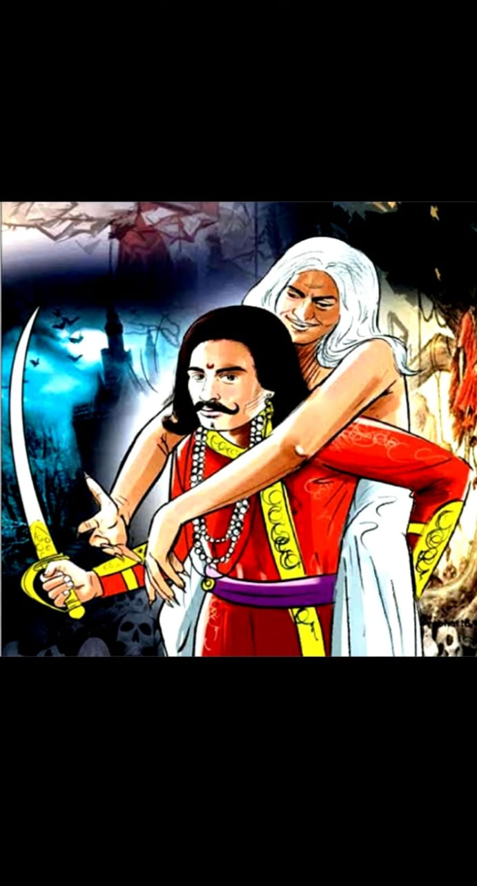

11.કોણે સૌથી વધુ બલિદાન આપ્યું છે ? |
ફરી એકવાર રાજા વિક્રમાદિત્ય બેતાલને ઝાડ પરથી ઉતારે છે અને યોગી પાસે જવા માટે આગળ વધે છે. દર વખતની જેમ આ વખતે પણ બેતાલ રાજનને એક વાર્તા કહે છે. બેતાલ કહે છે કે…
વીરબાહુ નામનો એક રાજા હતો, જે નાના રાજ્યો પર રાજ કરતો હતો. રાજા અનગપુર નામની રાજધાનીમાં રહેતા હતા. એ જ રાજધાનીમાં અર્થદત્ત નામનો એક વેપારી પણ રહેતો હતો, જેને મદનસેના નામની પુત્રી હતી. વેપારીની દીકરી અવારનવાર બગીચામાં ફરવા જતી. એક દિવસ એક યુવકે બગીચામાં મદનસેનાને જોયો અને તેને જોતો જ રહ્યો. તે મદનસેનાના પ્રેમમાં પડી ગયો હતો અને તેના જીવનની દરેક ક્ષણે તેના વિચારોમાં ડૂબેલો રહે છે.
એક દિવસ યુવાન હિંમત એકઠી કરીને બગીચામાં ગયો. મદનસેના ત્યાં એકલી બેઠી હતી. તેણે યુવતીને કહ્યું, "મારું નામ ધરમ સિંહ છે અને હું તમારી સુંદરતાના પ્રેમમાં પડી ગયો છું. " વેપારીની પુત્રીએ જવાબ આપ્યો, "મારાથી દૂર રહો, હું બીજાની ભરોસો છું." ધરમ સિંહ તેની વાત સાંભળતો નથી અને લગ્નની જીદ કરે છે. પછી મદનસેના કહે છે, "મારા લગ્ન સમુદ્ર દત્ત સાથે નક્કી થઈ ગયા છે અને હું આ પ્રસ્તાવ સ્વીકારી શકતો નથી."
આ સાંભળીને ધરમસિંહ ઉદાસ થઈ ગયા. ગુસ્સામાં તેણે મદનસેનાને કહ્યું, "જો તું મારી બનીશ તો હું મારી નસ કાપી નાખીશ. " આ સાંભળીને મદનસેના ખૂબ ડરી ગઈ. મદનસેનાએ તેને વચન આપ્યું કે તે બરાબર પાંચ દિવસ પછી તેને મળવા આવશે. આ સાંભળીને ધરમસિંહ ખુશ થઈ ગયા.
|
|
પાંચમા દિવસે, મદનસેનાના લગ્ન સમુદ્ર દત્ત સાથે થવાના હતા. લગ્નની તમામ વિધિઓ પૂરી કર્યા પછી, મદનસેના તેના પતિ સમુદ્રદત્તના ઘરે ગઈ, પરંતુ તેને ધરમ સિંહને આપેલું વચન યાદ આવ્યું. પતિ મદનસેના પાસે જતાં જ તેને કહે છે કે મારે તારી સાથે ખૂબ જ જરૂરી વાત કરવી છે. તેણી કહે છે, "મારે એક છોકરાને મળવા જવું છે જેને મેં લગ્ન પહેલા આજે મળવાનું વચન આપ્યું હતું." આ સાંભળીને સમુદ્ર દત્ત ખૂબ જ દુઃખી થઈ ગયા. તેણે વિચાર્યું કે તે સ્ત્રી માટે શરમજનક છે જે પહેલા જ દિવસે બીજા પુરુષ પાસે જવા માંગે છે. જો હું તેને રોકીશ તો પણ તે દૂર જશે. એમ વિચારીને સમુદ્ર દત્તે તેને જવા દીધો.
પતિ પાસેથી જવાની અનુમતિ મળ્યા બાદ મદનસેના ઝડપથી છોકરાના ઘર તરફ જવા લાગી. એક મહિલાને દુલ્હનના કપડામાં જતી જોઈને એક ચોરે તેને રોકી. તેનો હાથ પકડીને ચોરે કહ્યું, "ક્યાં ગયા હતા?" મદનસેના ડરી ગઈ. તેણીએ ચોરને કહ્યું, "તમે મારા દાગીના લઈ લો અને મને જવા દો." ચોરે કહ્યું, "મારે તારા દાગીના નહિ પણ તારે જોઈએ છે." આખી વાત જણાવતા મદનસેનાએ કહ્યું, "પહેલા હું ધરમ સિંહને મળવા જઈશ, પછી તમારી પાસે પાછો આવીશ." ચોરે પૂછ્યું, "તમે તમારા લગ્નના પહેલા જ દિવસે તમારા પતિને છોડી રહ્યા છો." યુવતીએ જવાબ આપ્યો કે તે તેના પતિની પરવાનગીથી જઈ રહી છે. આ સાંભળીને ચોરે કહ્યું, "જ્યારે તારો પતિ તને મોકલી શકે છે, તો જાવ, હું પણ તને જવા દઈશ." પણ ત્યાંથી પાછા ફર્યા પછી તમે સીધા મારી પાસે આવો.
મદનસેનાએ ચોરને વચન આપ્યું અને છોકરા તરફ ચાલવા લાગી. બીજી તરફ, મદનસેનાના પતિ અને ચોર બંને તેનો પીછો કરી રહ્યા હતા. રસ્તામાં મદનસેના ધરમસિંહના ઘરે પહોંચી. મદનસેનાને લગ્નના પોશાકમાં જોઈને તેણે પૂછ્યું, “અરે! તું મારી સાથે લગ્ન કરવા લગ્નનો પોશાક પહેરીને આવ્યો છે.” મદનસેનાએ તેને કહ્યું કે તે પરિણીત છે. આ સાંભળીને છોકરાએ કહ્યું, "તું તારા પતિથી ભાગીને અહીં કેવી રીતે આવી?" મદનસેનાએ તેને તેના પતિ પાસેથી કેવી રીતે પરવાનગી લીધી તે વિશે બધું કહ્યું.
|  |
આ સાંભળીને ધરમસિંહે કહ્યું, “તમારા પતિએ તમને આટલા ભરોસે આવવાની મંજૂરી આપી છે અને હવે લગ્ન કરીને તમે બીજાના ભરોસામાં આવી ગયા છો. હું તને ખૂબ પ્રેમ કરું છું, પણ હું કોઈ બીજાની સ્ત્રીને સ્પર્શ કરી શકતો નથી. કોઈ તમને જુએ તે પહેલાં, તમારા પતિ પાસે જાઓ. ચોર અને મદનસેનાના પતિ બંને છૂપી રીતે તેમની વાતચીત સાંભળી રહ્યા હતા. જેમ જ મદનસેના ધરમ સિંહના ઘરની બહાર આવે છે, તે બંને પણ પોતપોતાના રસ્તે નીકળી પડ્યા.
મદનસેના છોકરાનું ઘર છોડીને સીધો ચોર પાસે જાય છે. ચોર તેને જુએ છે અને મનમાં વિચારે છે કે તે કેટલું પવિત્ર છે, તેની સાથે કંઈપણ કરવું ખોટું હશે. આ ઉપરાંત તેને ધરમસિંહનું ઘર પણ યાદ છે. તે મદનસેનાની પ્રામાણિકતા અને ધરમ સિંહના બલિદાનથી પ્રભાવિત થાય છે અને કહે છે, "તારા પતિ પાસે જાવ, તમે અહીં શું કરો છો." એમ કહીને ચોર મદનસેનાને તેના ઘરે છોડી દે છે.
બેતાલ મદનસેનની વાર્તા બંધ કરીને રાજાને પૂછે છે, “હે રાજા! હવે મને કહો કે આ ત્રણમાંથી કોનું બલિદાન સૌથી મોટું છે? વિક્રમાદિત્ય કહે છે, "બેતાલ એ ચોરે કરેલો સૌથી મોટો બલિદાન છે." આ સાંભળીને તે રાજાને પૂછે છે કે કેવી રીતે? વિક્રમાદિત્ય કહે છે, “સાંભળો બેતાલ, મદનસેનાના પતિએ તેને એમ વિચારીને જવા દીધો કે તે બીજી વ્યક્તિ તરફ આકર્ષાય છે, આવી સ્ત્રીનું શું કરવું. ધરમ સિંહ તેને એવું વિચારીને છોડી દે છે કે તે કોઈ બીજાની પત્ની છે અને તેને પણ ખબર હતી કે તે પાપ કરી રહ્યો છે. તે જ સમયે, એવો ડર હતો કે મદનસેનાનો પતિ રાજાને સવારે તેને સજા કરવા કહેશે. ચોર કંઈપણથી ડરતો ન હતો, તેણે ઘરેણાંથી લદેલી સ્ત્રીને છોડી દીધી. તે હંમેશા પાપી કૃત્યો કરતો હતો, જો તેણે આ વખતે પણ તે કર્યું હોત તો તેની સાથે કંઈ ન થાત. તેથી જ ચોરનું બલિદાન મહાન છે. " રાજાનો જવાબ સાંભળીને બેતાલ ખૂબ જ ખુશ થઈ અને બોલ્યો, "રાજા, તમે તમારું મોં ખોલ્યું છે, હવે હું જાઉં છું.આમ કહીને બેતાલ ફરી એક વાર ઉડી જાય છે.
કોઈપણ મુશ્કેલીમાં વ્યક્તિએ પોતાનું પાત્ર અને આત્મવિશ્વાસ ગુમાવવો જોઈએ નહીં